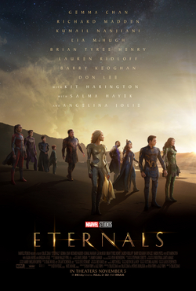
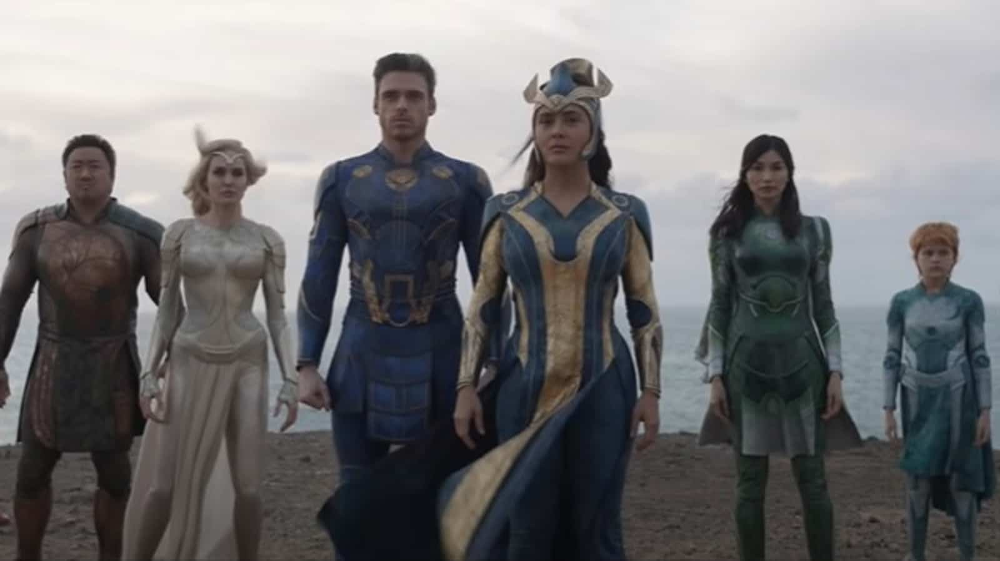

NOW SHOWING MOVIES
- 
- 
TITLE: ETERNALS
STARRING: Gemma Chan Richard Madden Kumail Nanjiani Lia McHugh Brian Tyree Henry Lauren Ridloff Barry Keoghan Don Lee Harish Patel Kit Harington Salma Hayek Angelina Jolie
Age:14
In 5000 BC, ten superpowered Eternals—Ajak, Sersi, Ikaris, Kingo, Sprite, Phastos, Makkari, Druig, Gilgamesh, and Thena—are sent by the Celestial Arishem to Earth on their starship, the Domo, to exterminate the invasive Deviants. The last of the Deviants are killed in 1521, and the group's opinions differ over their continued responsibilities and their relationship with humankind. Over the next five hundred years, they mostly live apart from each other, awaiting Arishem's return. In the present day, Sersi and Sprite live together in London. After Sersi was left by her partner Ikaris centuries earlier, she is now in a relationship with human Dane Whitman, who works at the Natural History Museum. The trio is attacked by the Deviant Kro, with Ikaris arriving and chasing the creature away. Realizing the Deviants have returned, they travel to South Dakota to reunite with their leader, Ajak, only to find that she had been killed by Kro. Sersi is posthumously chosen by Ajak as her successor, granting her the ability to communicate with Arishem, who reveals that the mission of the Eternals was not to fight the Deviants but to prepare Earth for the "Emergence". Arishem explains that for millions of years, the Celestials have been planting their seeds on populated planets for new Celestials to be born, with the Deviants sent by them to destroy the apex predators of each planet to ensure the development of intelligent life. However, when the Deviants evolved and began hunting the planets' native populations, the Celestials created the Eternals to cull them. With the reversal of the Blip,[N 1] Earth has reached the necessary population for the birth of the Celestial Tiamut, which will result in Earth's destruction.